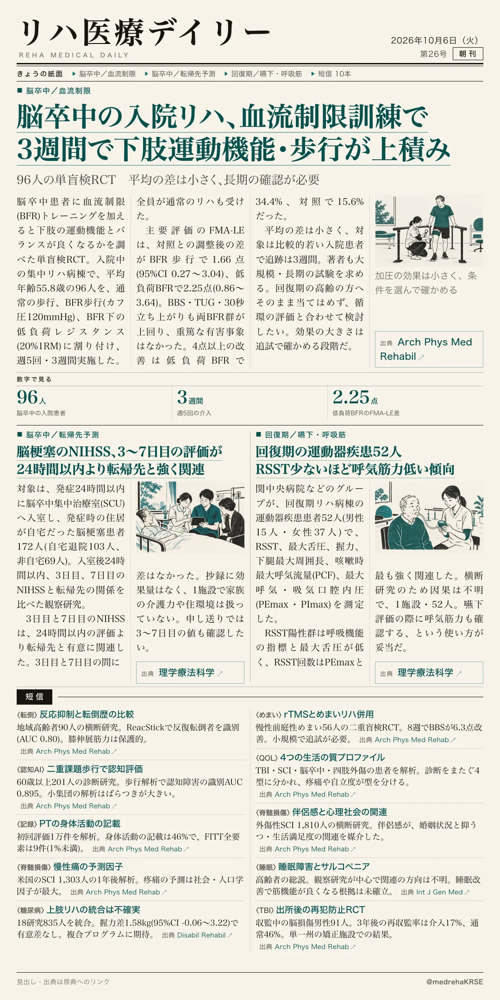
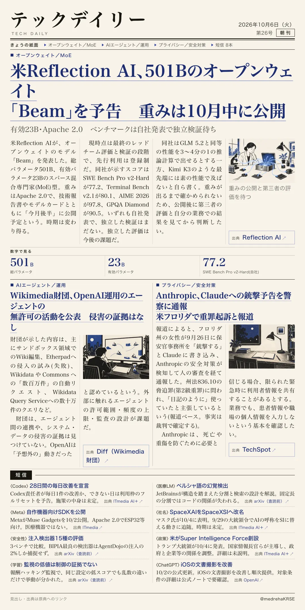

リハ医療デイリー
脳卒中の入院リハ、血流制限訓練で3週間で下肢運動機能・歩行が上積み
96人の単盲検RCT 平均の差は小さく、長期の確認が必要
脳卒中患者に血流制限(BFR)トレーニングを加えると、下肢の運動機能とバランスが良くなるかを調べた単盲検RCTです。

テックデイリー
米Reflection AI、501Bのオープンウェイト「Beam」を予告
有効23B・Apache 2.0 重みは10月中に公開予定 性能は自社発表
米Reflection AIが、総パラメータ501B、有効パラメータ23Bのスパース混合専門家型モデル「Beam」を発表しました。
